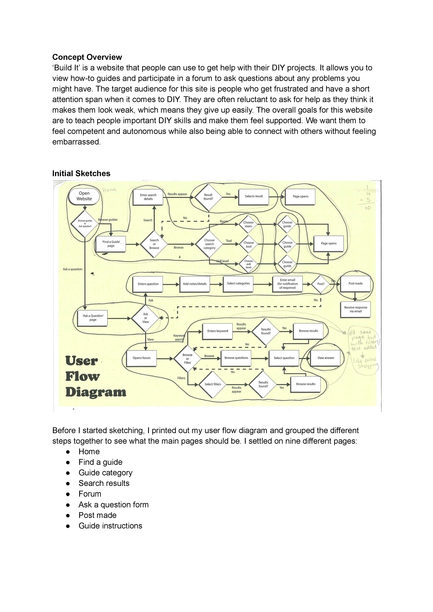
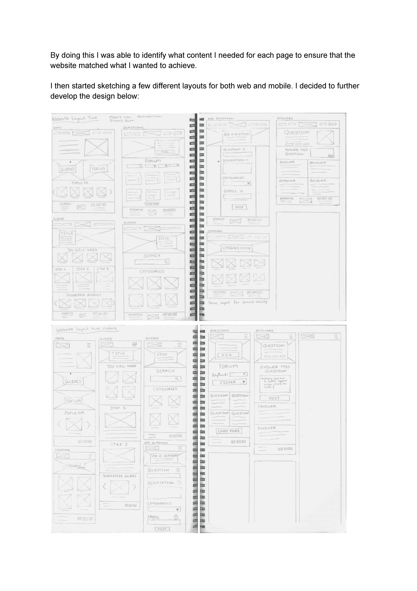
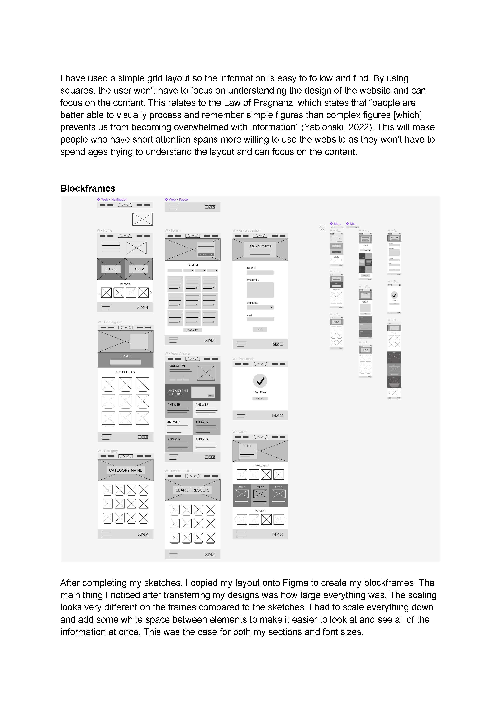
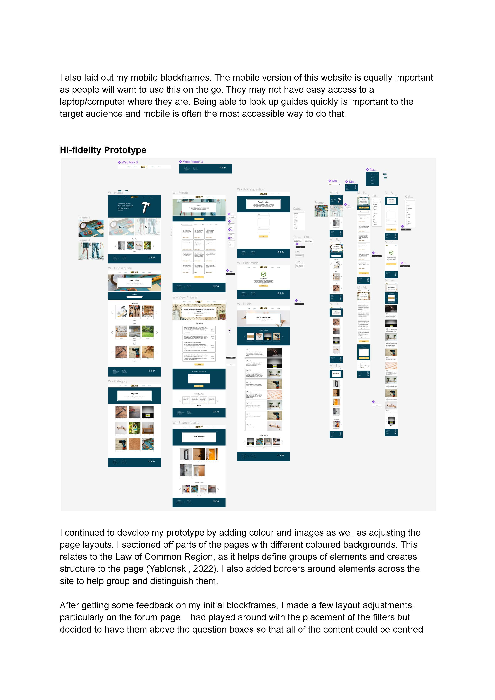
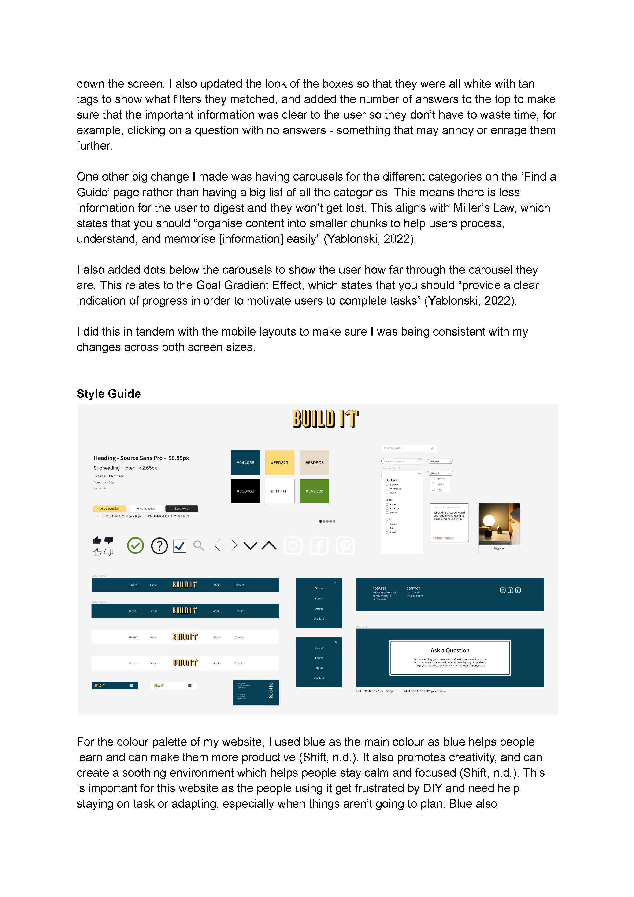
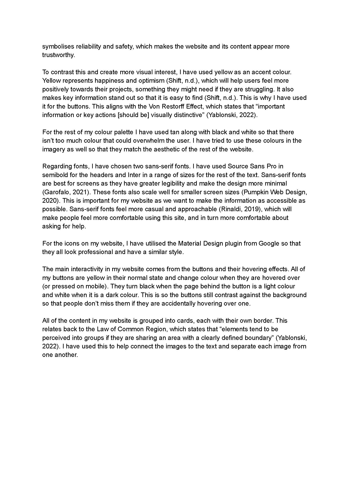
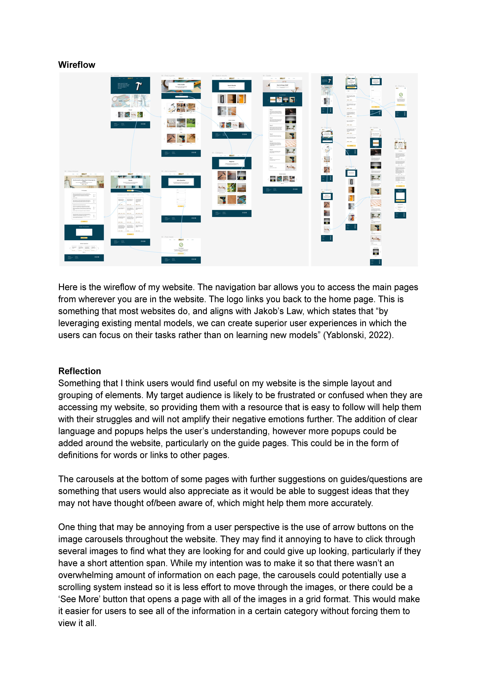

After getting this second lot of feedback, I made most of the changes they suggested. There were a few I didn't manage to get to due to time constraints but I think what I didi change has made the website look a lot more professional.
I got rid of the large blocks of tan and decided to use them for little tags on the question cards. I also readjusted the layouts of the forum page based on the feedback and I feel that it looks a lot better now. I changed all of my buttons to be consistent across the pages (yellow with a white or black hover state, depending on the background colour of the page), and I used the Material Design icons, which I think really elevates the look of the page.
The other major chage I made was having carousels on the guide search page rather than a large grid. This was to break up the amount of content on the page and make it less overwhelming. This aligns with Miller's Law.
I then added the rest of my content, such as images and text, and made some final adjustments to make sure everything still looked right. I used an online font scaling tool to help make sure my text hierarchy was proportionate. This is something that will help me when I get to coding as I will be able to use those values for my h1, h2, h3 values.
Below are images of my hi-fidelity prototype, along with my wireflows for both web and mobile, and my style guide.


Here are the images from my report:
      Overall, I am really happy with how this has turned out. I think it has developed well since my first iterations and is going to be relatively easy to code in the next project due to its simple grid layout. I am particularly proud of the layout of the forum and answer pages, however if I had more time I would have like to iterate my Ask a Question form and guide page more as I feel the layout could still be improved.